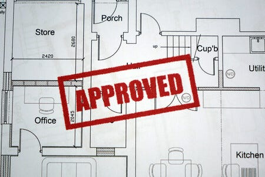
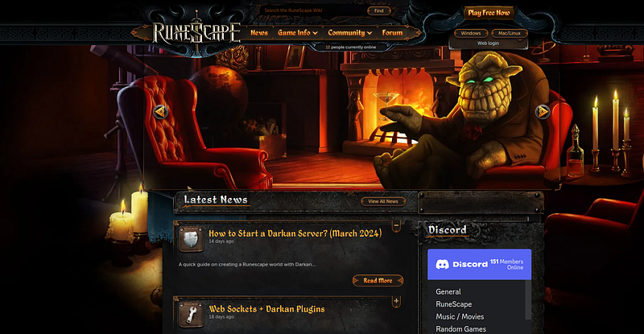

Projects determine what exactly you are learning as a programmer.
You should find with more projects completed you develop a type of master algorithm to learning code.
Code itself becomes discernable.
The perceived requirements lessen and you become capable of loftier goals.
As you grow in a niche you should find yourself more useful and more enjoyment.
This is the goal.
To become great at our niche and to enjoy our greatness in it.
Then for each niche we begin we restart as a novice again. A novice with a better master algorithm for learning code.
How then shall we choose the projects for our chosen niche?
And what should we consider? Let's talk about it.
Set a long-term goal for your niche
The first and foremost action is a long-term goal. A dream-like driver of what must be done.
These are all great examples of long-term goals.
"Learn the fundamentals of programming"
"Become proficient at Java"
"Become proficient at backend web development"
"Become proficient at graphics programming"
"Become proficient at Machine Learning"
"Get a broad Computer Science education at university"
From here you work backwards to today. What must be done today, tomorrow, in a month in order to reach the end goal.
Its about directional learning, imperfect bu consistent learning.
Focusing on a daily work, lets go...
Determine if the goal is in reach
Often the goal is not the problem, but the projects that make it happen.
You should choose goals based on the demanded projects. Think of the projects required for the goal as a collective, think these demands...
- Affordability
- Skills needed
- Opportunity
Are the projects within the goal affordable?
Are my current skills too far from the projects?
Is there opportunity in learning for that goal?
If most projects are within your budget, slightly outside your skill set (not too much) and provide opportunity for your advancement, then it is in reach.
Think of 3-5 long term goals and determine if they are in reach or out of reach.
Of these 3-5 goals choose one, the most viable...
Manage your expectations
If you are an absolute beginner or a beginner in general, your goals are stuck at "learn fundamentals" or "become proficient at C++".
These are unavoidable goals for the beginner and you should typically choose your projects around that.
Almost always we start too lofty and that is okay, normal and almost required.
As your expectations shrink, you develop a solid view of yourself to grow from and the only way to know is to set a goal that is too high then lower it.
It can take weeks to shrink your goals enough to reach a true self image.
But we expand from there.
What typically happens, programmers set a lofty goal, commit to projects then discover the prerequisites for the projects are too high.
It happens every time. When you first start coding, when you switch niches, when you enter University and when you start working as a software engineer.
Most of us tend to overestimate ourselves.
This is good, we must determine our current limitations of budget, skill and opportunity.
Consider downsizing your projects and goals as part of the process.
It is not a failure but a recognition of reality.
The mindset should be...
- Where you are today
- Where you can be tomorrow
For your goals it is easier to say "what is the best course of action today?" rather than "what is the coolest project?".
I advocate for learning for today as a direction rather than for an achievement.
Some goals require a vast array of skills
In addition, many goals require a vast array of skills.
Game development for example requires you to learn Sprite creation, 3D modeling, the game engine, the scripting language and programming all at the same time.
Machine learning requires Python/R/Julia, Math, Data Science, ML Libraries and foundational programming skills.
Do you really want to learn all these things?
Because they truly are required.
If you are willing to make the sacrifice and learn those arrays of skills then do it.
Those two niches are totally valid as long as you are willing to learn what is required.
Effort is all that is needed after accepting the requirements.
Why you need at least 1 long-term project
If you are undecided on 1 long-term project, put the idea in your mind. "I need a long-term project". Let it stink in the background and wonder.
Among your projects should be one that stands out. A project that takes years to finish. A monolithic project for monolithic learning.
So you know, it can take months to years to find a good solid long-term project. For me personally it took about 10 months to find a project from the day I started programming.
And always, when I talk to the best developers they have 1 long-term project. They use the project to learn an array of programming skills from a monolithic project.
The project is so large, they needed to learn comprehensively for the project.
Mine personally, is a multiplayer game called Darkan.
I created the website solo, made a good chunk of its API, contributed heavily to the game server, client, developed the entire wiki solo using scrapping from the original game wiki and wrote many other smaller projects for the video game.
My goal at the time was to become an excellent web/general developer. Not too shabby.
Hey it could be a video game, a web app, a mobile app, a graphics programming project, a game engine, all kinds of things.
How to pick a topic
Topics are the type of projects within your goals.
Video games, websites, mobile apps, etc these are the topics to pick.
Given these three factors:
- Affordability
- Skills needed
- Opportunity
There needs to be a choice of topic.
Honestly, this is something that you can only understand after you have done it. You have no choice but to shoot in the dark.
You can do research and ask around which would be best but you only truly know afterward.

So for the sake of your own sanity, it is easier to do things you enjoy or have plenty of opportunity in.
How to choose a project
No matter which project you choose, it should always advance you toward your long-term goals.
The requirements for said project depend on its duration.
Let's break down a mindset for them.
Short-term projects
Goals under 1 month are short-term goals.
They require less forethought and can be considered under 3 requirements:
- Enjoyment: can be slightly unenjoyable
- Opportunity: requires no opportunity
- Impact: doesn't necessarily require impact
If you can, make these three things as high as possible.
But they are lesser requirements at lower durations.
Totally valid.
Examples include...
- "30 easy Leetcode problems"
- "10 entry level Kaggle competitions"
- "portfolio website"
- "Web tool for World of Warcraft"
- Etc.
Medium-term projects
Medium duration goals are those under 6 months.
These requires moderate forethought under these requirements...
- Enjoyment: must be slightly enjoyable
- Opportunity: requires slight opportunity
- Impact: requires slight impact
- Group: may or may not require a group
Your personal satisfaction should be higher for projects of this size.
You need something to sustain you and excite you and you need to think about it for a few days and ask around if its a good idea.
Examples include...
"120 Leetcode problems: 30 easy 90 mediums"
"40 Kaggle competitions: 10 entry and 30 regular"
"A custom application built from scratch (small)"
"A Large Language Model for another project"
"A moderate sized plugin for Minecraft/Bannerlord/etc."
"A programming language starter"
Long-term projects
Long-term goals are those that last over 3 years.
These often require months of searching. Hey you can get lucky and find it within the first week. Maybe, maybe not.
The requirements should be...
- Passion: Requires a love and passion
- Opportunity: plenty of opportunity
- Impact: requires impact
- Group: absolutely requires a group
Often the opportunity and impact from these come from the group itself. The group and community make the project fun.
Examples include..
"A full-fledged video game"
"A major web service"
"A console emulator"
"A game engine"
"A programming language"
"A major game plugin or set of plugins"
"A major mobile app"
"A cross-platform desktop app"
Anywho, I hope you learned something...
CTA: Check out my book on learning code. Its about learning code itself, not Computer Science.
Happy coding!
Resources
How workstations boosts your programming capability: How a Workstation Boosts Your Code Productivity
Why coding fundamentals are important: Why the Fundamentals of Coding Are the Key to Success
How to learn any programming language: How Should I Pick a Language to Start Coding Like a Superstar?